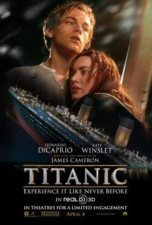

Suicide Squad
Rating 7.4/10
Fecha de estreno: 5 de Agosto de 2021
Duracion: 2h 12min
Con tal de salir de una prisión infernal, los supervillanos más peligrosos del mundo aceptan una misión del Gobierno: viajar a una remota isla, enemiga de los Estados Unidos y repleta de soldados, para destruir un laboratorio de alta tecnología.
Genero: Accion

Rapidos y Furiosos 9
Rating 5.2/10
Estreno: 24 de Junio de 2021
Duracion: 2h 23min
Dom Toretto vive una vida tranquila junto a Letty y su hijo, pero el peligro siempre regresa a su vida. En esta ocasión, el equipo se enfrenta a un complot mundial orquestado por el asesino más temible del mundo: el hermano de Dom.
Genero: Accion

No Respires 2
Rating 6.1/10
Estreno: 13 de Agosto de 2021
Duracion: 1h 38min
Un veterano ciego debe usar su entrenamiento militar para salvar a un joven huérfano de un grupo de matones que irrumpen en su casa.
Genero: Terror

Luca
Rating 7.5/10
Estreno: 18 de Junio de 2021
Duracion: 1h 11min
Luca es un monstruo marino que vive debajo de un pueblo de la costa italiana. Cuando sale a la superficie, adquiere una apariencia humana, y conoce a un nuevo amigo, igual que él. Juntos emprenden una aventura entre humanos que odian a los monstruos.
Genero: Animacion

Bob Esponja: al rescate
Rating 6/10
Estreno: 5 de Noviembre de 2020
Duracion: 1h 31min
Bob Esponja vive feliz en su piña en Fondo de Biquini, junto a su mascota, el caracol Gary. Le encanta su trabajo en el Crustáceo Crujiente, y siempre tiene tiempo para quedar con su mejor amigo, Patricio. Pero un día, todo cambia cuando, al llegar a casa, descubre que Gary ha sido secuestrado. Dispuesto a recuperar a su fiel compañero, Bob decide salir a encontrarlo.
Genero: Animacion

Avatar
Rating 7.8/10
Estreno: 16 de Diciembre de 2009
Duracion: 2h 42min
Jake Sully es un ex-marine confinado en una silla de ruedas que, a pesar de su cuerpo tullido, todavía es un guerrero de corazón. Jake ha sido reclutado para viajar a Pandora, donde las corporaciones están extrayendo un mineral extraño que es la clave para resolver los problemas de la crisis energética de la Tierra
Genero: Fantasia

Titanic
Rating 7.8/10
Estreno: 18 de Noviembre de 1997
Duracion: 3h 14min
Relata la relación de Jack Dawson y Rose DeWitt Bukater, dos jóvenes que se conocen y se enamoran a bordo del transatlántico RMS Titanic en su viaje inaugural desde Southampton (Inglaterra) a Nueva York (EE. UU.) en abril de 1912.
Genero: Drama

El Rey Leon
Rating 8.5/10
Estreno: 12 de Junio de 1994
Duracion: 1h 28min
Tras el asesinato de su padre, Simba, un joven león es apartado su reino y tendrá que descubrir con ayuda de amigos de la sabana africana el significado de la responsabilidad y la valentía. Más tarde volverá para recuperar el control de su reino.
Genero: Animacion

Jurassic World
Rating 7/10
Estreno: 9 de Junio de 2015
Duracion: 2h 4min
Una nueva especie de dinosaurio, creada por los científicos de forma artificial y claramente más inteligente y peligrosa que los animales conocidos, ataca a los turistas que visitan el parque temático "Jurassic World", situado en una isla frente a Costa Rica.
Genero: Accion

Avengers Endgame
Rating 8.4/10
Estreno: 22 de Abril de 2019
Duracion: 3h 1min
Después de los eventos devastadores de 'Avengers: Infinity War', el universo está en ruinas debido a las acciones de Thanos, el Titán Loco. Con la ayuda de los aliados que quedaron, los Vengadores deberán reunirse una vez más para intentar deshacer sus acciones y restaurar el orden en el universo de una vez por todas, sin importar cuáles son las consecuencias... Cuarta y última entrega de la saga "Vengadores".
Genero: Accion